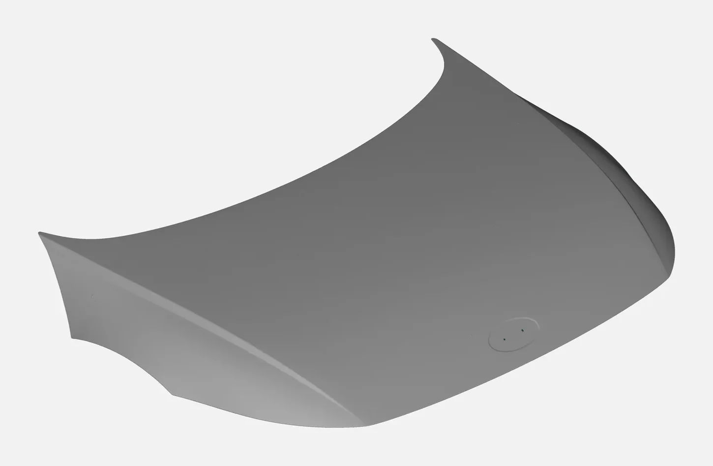
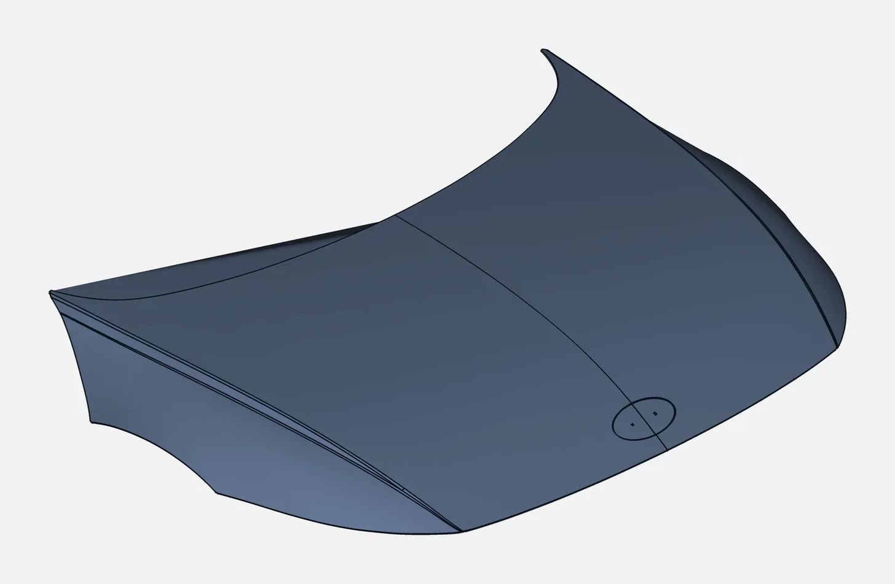
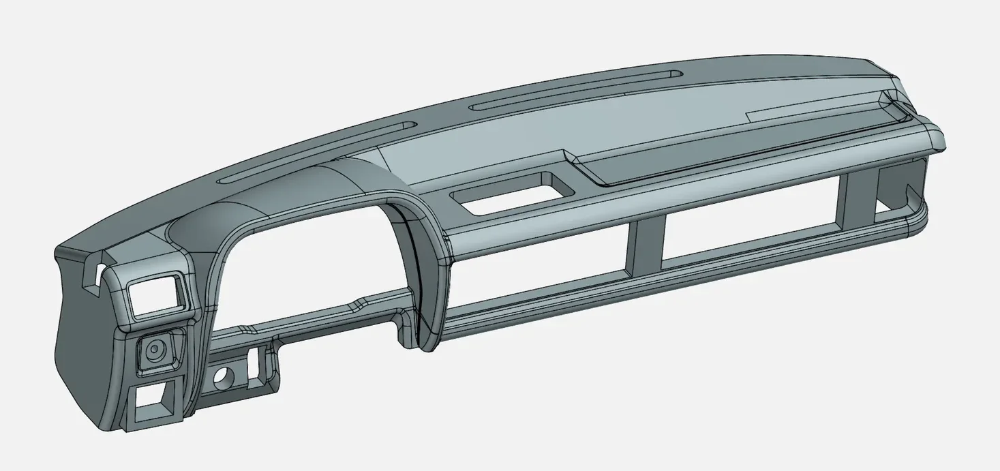

Look along the side of a well-made car and you'll see reflections flow across the panels in smooth, unbroken lines. Look at a poorly made one and the reflections wobble, kink or jump. That difference is surface quality, and in automotive and premium product design it is engineered deliberately through Class A surfacing.
What does "Class A" mean?
Class A surfaces are the visible, aesthetic surfaces of a product: the outer body panels of a car, a motorcycle fuel tank or fairing, a dashboard, or the shell of a premium appliance. They must be perfectly smooth and continuous, so light reflects off them without distortion.
Class B and C surfaces are the hidden ones: inner panels, ribs, mounting features. They must be functional and manufacturable, but nobody judges their reflections.
Continuity: G0, G1, G2, G3
The key to Class A is how surface patches meet:
| Continuity | What it means | Visual result |
|---|---|---|
| G0 (position) | Surfaces touch | Visible sharp edge |
| G1 (tangent) | Surfaces meet at the same angle | Smooth to touch, but reflections "break" |
| G2 (curvature) | Curvature matches across the boundary | Reflections flow smoothly; the usual minimum for Class A |
| G3 (rate of curvature change) | Curvature changes smoothly too | Highest-quality reflections; used on premium surfaces |
A G1 fillet may look fine in a grey CAD render, but on a glossy painted panel the reflection shows a visible kink. Class A surfacing is the discipline of controlling this.
How surface quality is checked
Surfacing engineers use analysis tools that simulate how a surface will look:
- Zebra stripes: black-and-white stripes reflected on the surface. Stripes should flow smoothly across patch boundaries without kinks or jumps.
- Highlight lines: simulate studio light reflections
- Curvature combs and maps: show how curvature changes along curves and across surfaces
- Deviation checks: confirm the surface stays within tolerance of the design intent or scan data


Where Class A surfacing comes from: design or scan
Class A surfaces are created from:
- Design data: a designer's concept model or a styling surface that needs refining to production quality
- Physical models: a clay model, a prototype or an existing part, 3D scanned and then resurfaced to Class A quality
The second route is common for facelifts, aftermarket parts, restoration and motorsport, where the starting point is a physical object. The scan gives the shape; the surfacing engineer rebuilds it with clean, controlled patches.
Products that need Class A surfaces
- Cars: bonnets, fenders, doors, bumpers, grilles, dashboards
- Two-wheelers: fuel tanks, fairings, side panels, headlamp housings
- Consumer products: appliances, electronics housings, premium packaging
- Aerospace and UAVs: aerodynamic fairings and wings, where smoothness matters for airflow as well as looks

Why it matters for manufacturing
Class A isn't only about looks. Clean, continuous surfaces:
- Produce better tooling: stamping dies and injection moulds machine more cleanly
- Reduce rework of visible defects after painting or moulding
- Make downstream design (Class B features, trims, gaps and flushes) easier and more reliable
Class A surfacing services in India and the UAE
India's automotive and two-wheeler industry, and the UAE's growing design and aftermarket sector, both need skilled surfacing support. VShark Solutions creates Class A surfaces from scans and design data for OEMs, tier suppliers and product designers. Explore our Class A surfacing service and Class A projects.